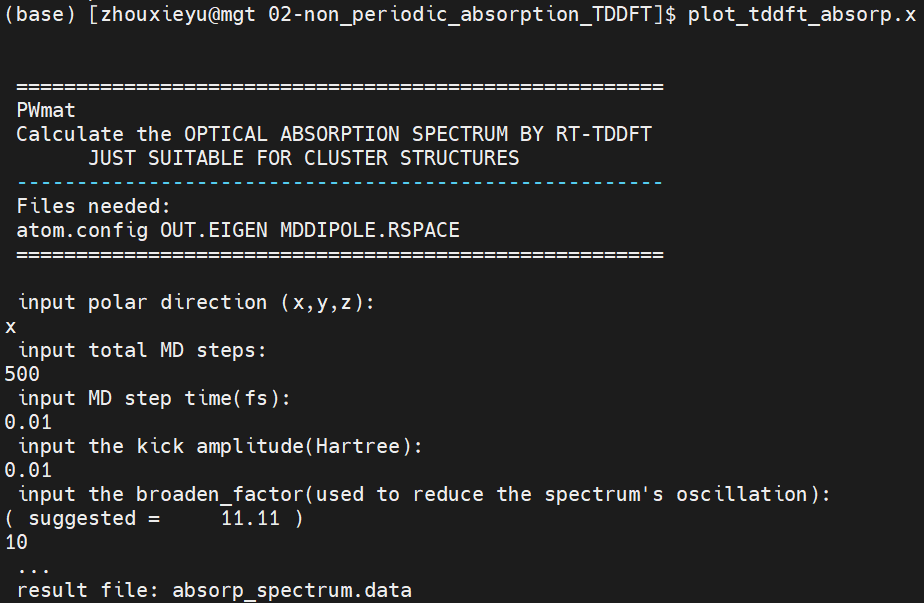
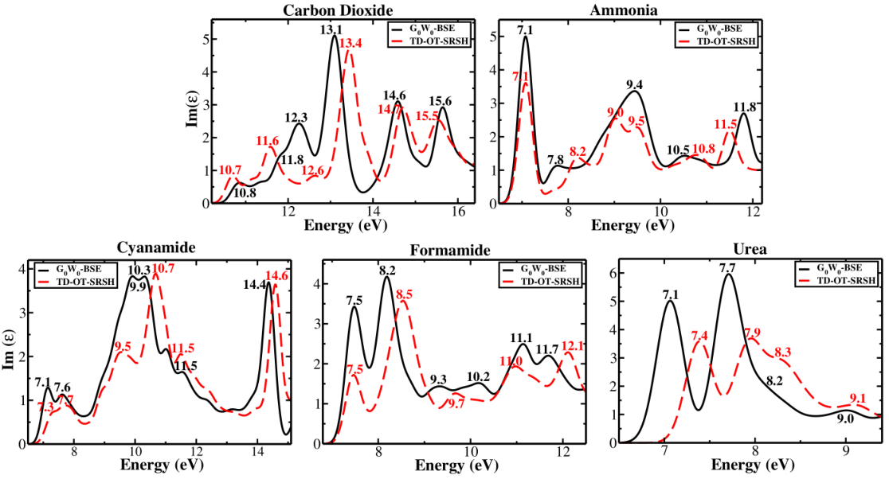
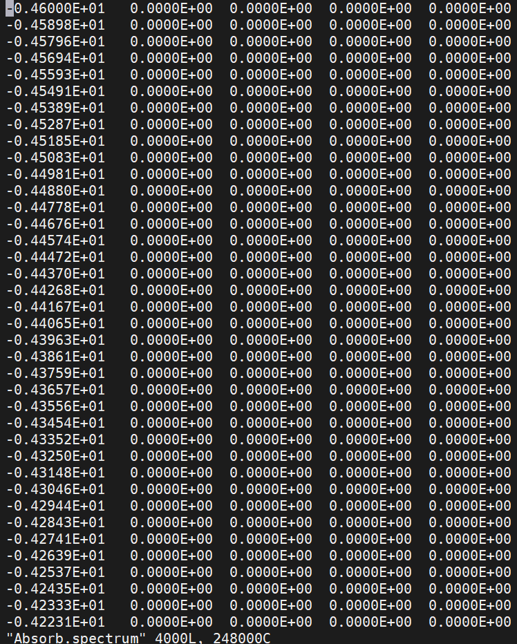
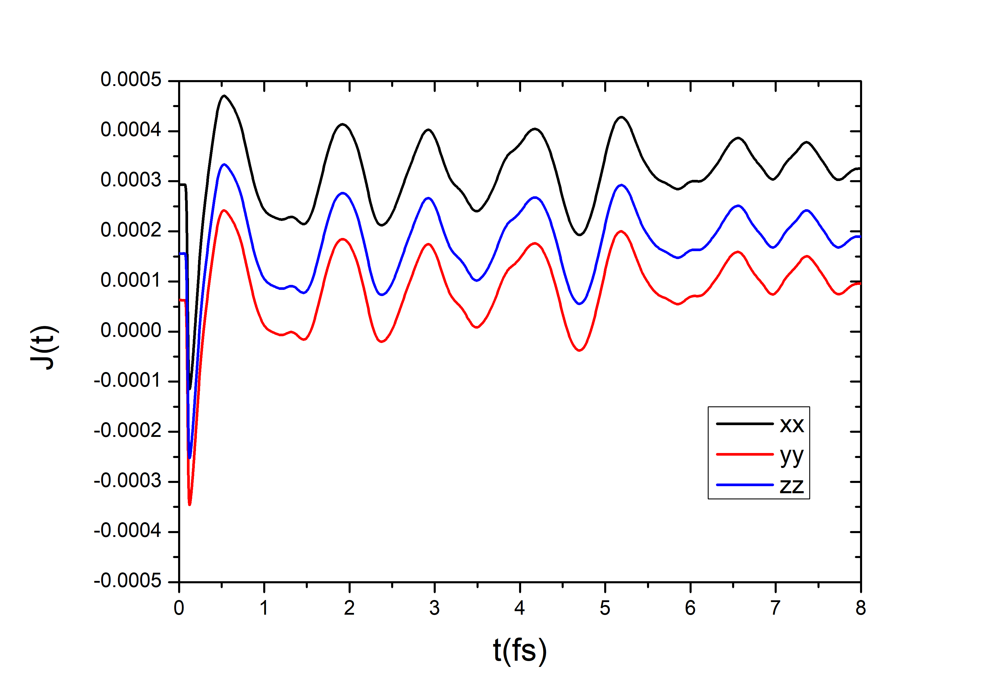
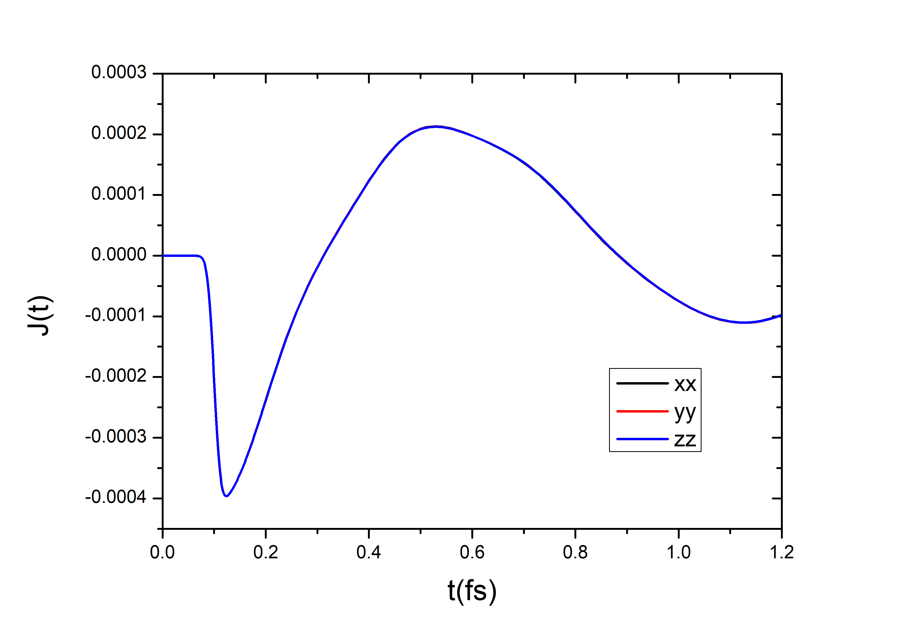
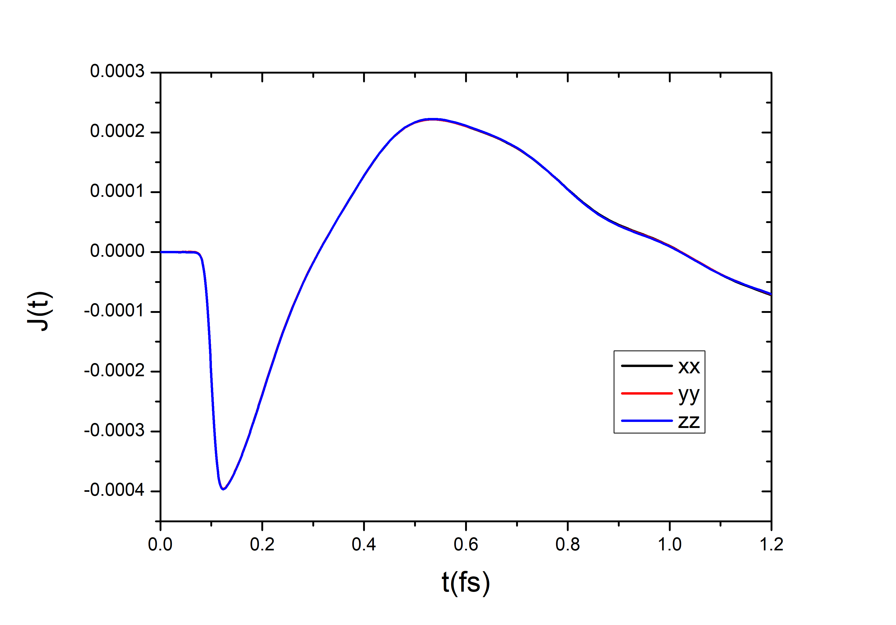
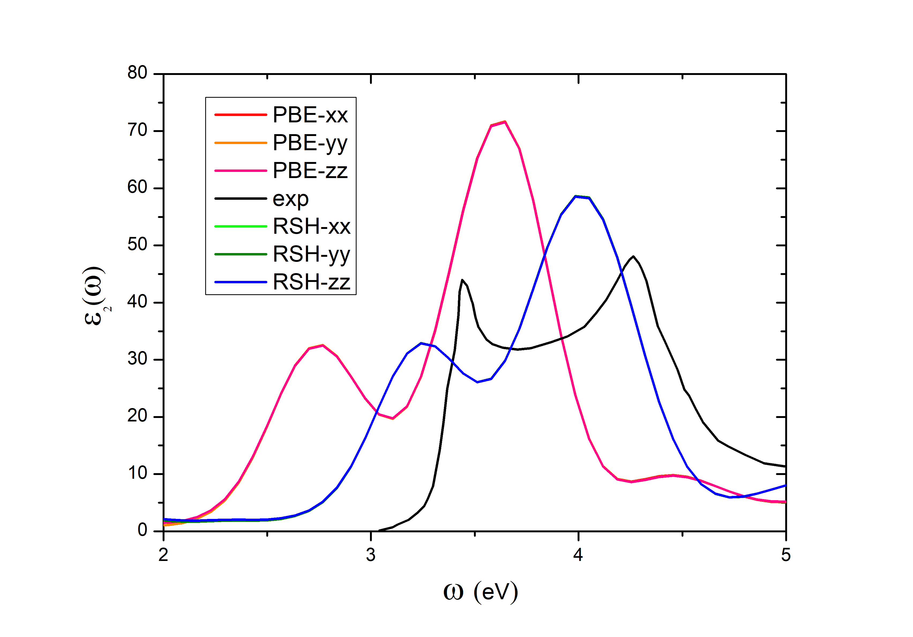
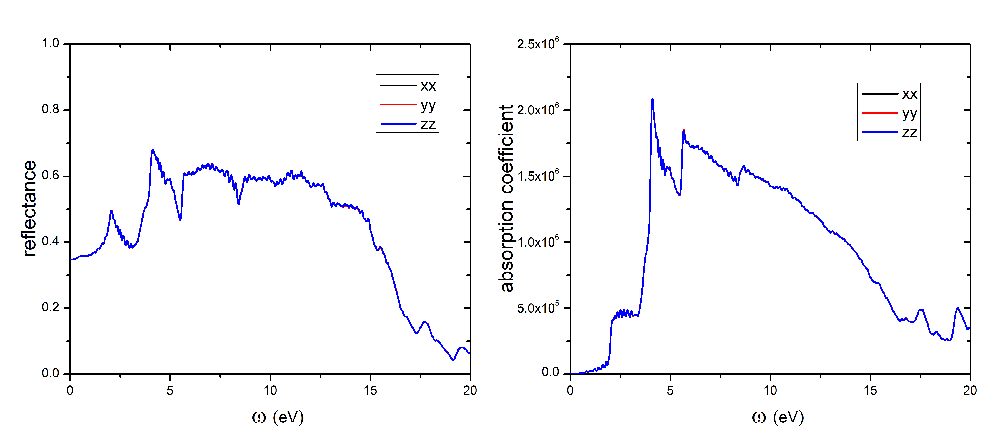
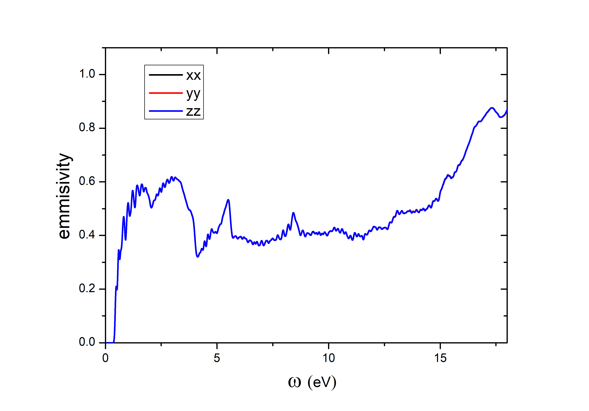

Optical properties¶
In this section, several modules are provided to calculate absorption spectrum, infrared spectrum, Raman scattering spectrum and second harmonic generation.
The core concept to calculate optical properties is to calculate the real part and imaginary part of dielectric constant, i.e. \(\epsilon_{1}\) and \(\epsilon_{2}\).
Note: we unity call \(\epsilon_{1}\) as dielectric constant and \(\epsilon_{2}\) as absorption spectrum!
Aborption spectrum for non-periodic systems¶
This module is used to calculate optical absorption spectrum by rt-TDDFT method. It is only applcable to non-periodic systems such as clusters or molecules. File plot_tddft_absorp.x has been added to utility, users who get PWmat version after 2018.12.07 could use it diectly.
In rt-TDDFT solution, the dielectric constants are calculated based on the following definition for non-periodic system
\(\epsilon_{2}(\omega)=Im{\frac{D(\omega)}{E(\omega)}}\)
Here \(D(\omega)\) is the dipole moment in one particular direction, and \(E(\omega)\) is the extermal perturbing electric field. Both are Fourier transformed from t in the actual simulation.
The following external fields are adding at the beginning of TDDFT:
\(E(r,t)=(x-x_{0})*E_{x}*\delta (t-t_{0})\)
or
\(E(r,t)=(y-y_{0})*E_{y}*\delta (t-t_{0})\)
or
\(E(r,t)=(z-z_{0})*E_{z}*\delta (t-t_{0})\)
Example: CH4¶
Take the absorption of single molecule CH4 as an example. The atoms in atom.config should be set not to move (0 0 0):
5
Lattice vector
0.6000000000E+01 0.0000000000E+00 0.0000000000E+00
0.0000000000E+00 0.6000000000E+01 0.0000000000E+00
0.0000000000E+00 0.0000000000E+00 0.6000000000E+01
Position, move_x, move_y, move_z
6 0.500000000 0.500000000 0.500000000 0 0 0
1 0.439206913 0.334139912 0.544457272 0 0 0
1 0.439206929 0.544457281 0.334139895 0 0 0
1 0.439327692 0.621514088 0.621514041 0 0 0
1 0.682180157 0.500017053 0.500017021 0 0 0
Here is a samlpe etot.input to show main tags:
4 1
!job
job=tddft
!input
in.atom = atom.config
in.psp1=C.SG15.PBE.UPF
in.psp2=H.SG15.PBE.UPF
IN.TDDFTOPT = T # prepare file IN.TDDFTOPT
!accuracy
convergence=difficult
precision=single
!md
md_detail=1 500 0.01 0 0 # md_method, total MD steps, MD step time, temperature1,temperature2
Users had better set convergence accuracy and should set ‘IN.TDDFTOPT=T’ in this directory. In file IN.TDDFTOPT, one could set:
OUT.MDDIPOLE.RSPACE = T/F, default = T. If T, write file MDDIPOLE.RSPACE each time step.
OUT.MDDIPOLE.KSPACE = T/F, default = F. If T, write file MDDIPOLE.KSPACE each time step.
TDDFT_SEED, default = 12345. Random seed for initializing the wavefunctions and velocities. If TDDFT_SEED = -1, the random seed will be set using the system_clock(). If this is not set, a default 12345 will be used.
Input external potential TD_EFIELD or TD_EFIELD_LIST_*. The details are in Manual B.16. We just introduce the following 3 fields for this example (unit: energys-Hartree, coordinates-fractional in [0,1],time-fs):
\(E(r,t)=(x-x_{0})*E_{x}*\delta (t-t_{0})\) –TD_EFIELD = td_kick_x 5 x0 y0 z0 \(E_{x}\) \(t_{0}\) \(E(r,t)=(y-y_{0})*E_{y}*\delta (t-t_{0})\) –TD_EFIELD = td_kick_y 5 x0 y0 z0 \(E_{y}\) \(t_{0}\) \(E(r,t)=(z-z_{0})*E_{z}*\delta (t-t_{0})\) –TD_EFIELD = td_kick_z 5 x0 y0 z0 \(E_{z}\) \(t_{0}\)
One can also add fields in 3 directions by:
TD_EFIELD_LIST_1 = td_kick_x 5 x0 y0 z0 Ex t0
TD_EFIELD_LIST_2 = td_kick_y 5 x0 y0 z0 Ey t0
TD_EFIELD_LIST_3 = td_kick_z 5 x0 y0 z0 Ez t0
We provide the following input in IN.TDDFTOPT:
TD_EFIELD = td_kick_x 5 0.5 0.5 0.5 0.01 0.0
OUT.MDDIPOLE.RSPACE = T
Run PWmat calculation. Type ‘plot_tddft_absorp.x’ after finish the calculation and the screen might like
Pay attention to the 5 input values: polar direction, MD steps, MD step time, kick amplitude and broaden_factor. The first 4 values should be consistent with etot.input and IN.TDDFTOPT! Users could plot the absorption spectrum using file ‘absorp_spectrum.data’.
Bulk optical absorption spectrum calculations¶
This module is used to introduce how to calculate optical absorption spectrum for bulk systems using RPA and rt-TDDFT methods (without local field effect). In addition to commonly used HSE06, PWmat could run the range separated bybrid (RSH, also called it HSE in PWmat) function with HSE_alpha, HSE_omega, HSE_beta parameters, representing short range mixing, long range mixing and transition position, correspondingly.The RSH could describe the long range dielectric screening with HSE_beta. So it is thus believed could describe the correct Coulomb interaction in electron-hole interaction. Further information for rt-TDDFT+RSH could be found in
DOI: 10.1021/acs.jctc.7b01058
Methods¶
PWmat provides two paths to get dielectric constant and absorption spectrum: RPA and rt-TDDFT.
For RPA calulation without the local field effect, imaginary part is based on Fermi Golden rule directly
\(\epsilon_{2}(\omega)=\sum_{i\in VB, j\in CB}|\langle\psi_{i}|\frac{\partial H}{\partial k}|\psi\rangle|^{2}\delta(E_{j}-E_{i}-\omega)\)
Here the \(\frac{\partial H}{\partial k}\) is the momentum operator, \(E_{i}\) is the eigen energy of eigen state \(\psi_{i}\). The real part dielectric constant at \(\omega=0\) could be generated from the integer
\(\epsilon_{1}(\omega)=\int_{0}^{\infty}\frac{\epsilon_{2}(\omega)}{\omega}d\omega\)
One could use LDA, PBE or HSE for this calculation. Use utility program ‘plot_ABSORP_interp.x’ after PWmat calculation to get the absorption spectrum.
In rt-TDDFT solution, on the basis of
\(\epsilon_{2}(\omega)=Im{\frac{D(\omega)}{E(\omega)}}\)
we use \(A(t)\) (\(E(t)=dA(t)/dt\)) and current \(J(t)\) (\(J(t)=dD(t)/dt\)) for periodic system. Spatially, \(A(t)\) is a constant. And roughly speaking \(J(t)\) is also a constant in periodic system. In the current calculation, we use a sharp Gaussian function in time to represent \(E(t)\) (so \(A(t)\)) is almost a step like function.
The optical absorption process is usually accompanied by the creation of electron-hole pairs. So the electron-hole interaction and excition dynamics are important calculation indicator, which is a great challenge for DFT calculation due to the single partical image. The RPA method could give rather good \(\epsilon_{1}\), but the \(\epsilon_{2}\) shape might not be so good due to the rough description of correlation effects. The rt-TDDFT could describ the response process better, which could give better \(\epsilon_{2}\) shape. But the correlation effect is also depend on how precise the functional is. Usually, rt-TDDFT might give non-ideal peak position and peak height. GW+Bethe-Salpeter equation (GW+BSE) is an establish method to calculate the exciton, and light absorption spectrum in bulk system which has the explicit electron-hole interactions (with screening). However, it is too expensive to implement the GW+BSE, not to mention the ultrafast dynamics. So the hope is that rt-TDDFT could also have the explicit electron-hole interaction, with the hse_beta = \(\epsilon\) as the screening. Previous work had shown that rt-TDDFT+RSH could give good results in several organic molecular crystals (10.1021/acs.jctc.7b01058):
Calculation procedure¶
In this section, we take Si primitive cell as an example to calculate optical absorption using RPA and rt-TDDFT. We use the following atom.config file:
2
Lattice vector
2.7155 2.7155 0.
2.7155 0. 2.7155
0. 2.7155 2.7155
Position, move_x, move_y, move_z
14 0.250000000000 0.250000000000 0.250000000000 0 0 0 1.0
14 0.00000000000 0.00000000000 0.000000000000 0 0 0 1.0
Linear response method¶
Users could implement the linear response method by the following 4 steps:
Do a JOB = SCF calculation with reasonable number of kpoints (One could use: LDA, PBE or HSE for this calculation). Take this etot.input for instance:
4 1
!job
JOB = SCF
!input
IN.ATOM = atom.config
IN.PSP1 = Si.SG15.PBE.UPF
!iter
SCF_ITER0_1 = 6 4 3 0.0 0.01 1
SCF_ITER0_2 = 94 4 3 1.0 0.01 1
!accurancy
Ecut = 50
Ecut2 = 100
MP_N123 = 8 8 8 0 0 0
RHO_ERROR = 0
E_ERROR = 1.0E-5
WG_ERROR = 0
NUM_BAND = 15
!functional
XCFUNCTIONAL = PBE
!output
OUT.VR = T
OUT.RHO = T
OUT.WG = T
Optical absorption calculation needs more vaccum bands (at least about 6 eV above the VBM). Users should modify NUM_BAND instead of the defualt value. One can change the ‘function’ block for different functionals. In particular, for RSH functional:
!functional
XCFUNCTIONAL = HSE
HSE_ALPHA = 0.25
HSE_BETA = 0.08547
HSE_OMEGA = 0.625
HSE_ALPHA is for short range mixing, there are some theoretical argument, showing that it is a good idea to set HSE_ALPHA = 0.25. HSE_BETA is for long range mixing, it is a good idea to set it to \(1/\epsilon(0)\). For bulk, silicon, we have used \(\epsilon(0)=11.7\). HSE_OMEGA controls the cut-off between the short range and long range. The larger HSE_OMEGA, the shorter short range region. The idea of optimally tuned RSH is to change HSE_OMEGA. The we might get the best electron structure, usually to have the correct band gap for a bulk system.
Do a JOB = NONSCF calculation with more kpoints. If the kpoints in JOB=SCF is large enough, one can ignore this step.
Do a JOB = DOS calculation, with DOS_DETAIL = 1, MP_N123. This will enable the interpolation scheme for step(4). Copy the OUT.WG from SCF (or NONSCF) as IN.WG and provide the correponding OUT.EIGEN. For RSH calculation, OUT.HSEWG* are also needed. Note: Utility plot_ABSORB_interp.x could not support interpolation method 2!
Run plot_ABSORB_interp.x, with the following DOS.input:
0 # 0: plot DOS for all atoms; 1: for partial atoms.
1 # 1: use interpolation for DOS plotting; 0: keeps the old method, not doing interpolation, just using a Gassian broadening
0.15 7.50719850855729 # energe smearing in eV (half-peak width) and Fermi energy (from SCF)
8 8 8 # k-point multiplication factor for interpolation
0.01, 0.1 # temp.occup, energy cutoff
OUT.SYMM, atom.config # symm file name and structure file name
1.0,0.0, 0.0,0.0, 0.0,0.0 # px
0.0,0.0, 1.0,0.0, 0.0,0.0 # py
0.0,0.0, 0.0,0.0, 1.0,0.0 # pz
The 5th line is not important for semiconductor, so give two small values. In the last 3 lins, ‘1.0 0.0’ represent ‘model, phase’. Note: The polarization direction is projected in 3 lattice vectors directions, i.e. a1*px+a2*py+a3*pz ! So users should modify px, py and pz to get the dielectric constants in right directions (x,y,z). For simplicity, use lattice with mutually orthogonal lattice vectors. We use primitive cell here only to show the calculation procedure.
After finishing the calculation, users could get \(\epsilon_{2}\) in ‘Absorb.spectrum` and \(\epsilon_{1}\) in ‘dielectric_constant’. Each of them contains 5 columns like
In sequence, energy, average \(\epsilon\), \(\epsilon\) in a1, \(\epsilon\) in a2 and \(\epsilon\) in a3.
We use the average values to compare with experiments for convenience:

As one can see, RPA method could not give the right shape. For PBE functional, the center of mass is kind of correct, which means the corresponding real part might be good. But it underestimates the absorption edge for about 0.6 eV. RSH functional could give the almost the right absorption edge, but the center of mass is even wrose than PBE.
rt-TDDFT method¶
We use a two step process for rt-TDDFT calculation for absorption spectrum calculations. An external field A(t) towards [111] is given:

Users could set this field by
IN.A_FIELD = T 0.002 0.002 0.002
TDDFT_SPACE = -1
TDDFT_TIME = 22 5 1.0 0.1 0.0141421356237 0.0 1.57079632679
The 3rd line specifies a delta like function at 0.1 fs, with a width of 0.0141 fs and amplitude of 1.5707. The first number 22 means the actual A(t) is the integer of this function, so it looks like a step.
The example etot.input is here:
8 1
!job
JOB = TDDFT
!input
IN.ATOM = atom.config
IN.PSP1 = Si.SG15.PBE.UPF
!iter
SCF_ITER0_1 = 6 4 3 0.0 0.01 1
SCF_ITER0_2 = 94 4 3 1.0 0.01 1
!accurancy
Ecut = 50
Ecut2 = 100
MP_N123 = 8 8 8 0 0 0 2
RHO_ERROR = 0
E_ERROR = 1.0E-5
WG_ERROR = 0
NUM_BAND = 15
!md
MD_DETAIL = 1 200 0.001 0 0
#MD_DETAIL = 11 1000 0.01 0 0
!tddft
TDDFT_DETAIL = 1 12 6
IN.A_FIELD = T 0.002 0.002 0.002
TDDFT_SPACE = -1
IN.TDDFTOPT = T
TDDFT_TIME = 22 5 1.0 0.1 0.0141421356237 0.0 1.57079632679
!functional
XCFUNCTIONAe = PBE
!output
OUT.VR = F
OUT.RHO = F
OUT.WG = F
One should also provide file IN.TDDFTOPT:
OUT.MDDIPOLE.KSPACE = T
OUT.MDDIPOLE.RSPACE = F
to output te dipole moment in k-space (actually current) in the file ‘OUT.MDDIPOLE.KSPACE’ or in other word the J(t).
The J(t) is corresponding to symmetry. The dipole components split due to ‘MP_N123 = 8 8 8 0 0 0 2’. Since A(t) is applied towards [111], symmetry just like rotation along the [111] still exist. The 3 dipole components should theoretically be degenerate. Users might test more kpoints to make sure the 3 splitted lines become degenerate again (10x10x10 here):
Note: Odd and even k-mesh usually contains different convergence. For primitive bulk Si, ‘MP_123 = 7 7 7 0 0 0 2’ could provide degenerate dipole components:
One could also solve this problem by giving IN.KPT and IN.SYMM. (we will introduce how to create them in RSH calculation)
Due to the sudden change at 0.01 fs, we would like to do two step TDDFT:
First for 0 to 0.2 fs, with a time step of 0.001 fs (MD_DETAIL line).
Second following step (1) with 0.01 fs step. (Rerun with MD_DETAIL = 11 1000 0.01 0 0)
During the TDDFT, the symmetry will be broken dueto the applied A(t). Users could simply use ‘MP_N123 = 8 8 8 0 0 0 2’ to close all symmetry. This will result in many kpoints (512 for 8 8 8). One can set kpoints parallel ‘1 8’ to calculate faster (except HSE calculation). If you want to use RSH functional, modify the ‘!functional’ block and close kpoint parallel.
!functional
XCFUNCTIONAL = HSE
HSE_ALPHA = 0.25
HSE_BETA = 0.08547
HSE_OMEGA = 0.625
We provide a method to reduce kpoints for RSH. Distort the system just like:
2
Lattice vector
2.7155 2.7155 0.2
2.7155 0.2 2.7155
0.2 2.7155 2.7155
Position, move_x, move_y, move_z
33 0.25000000000 0.25000000000 0.250000000000 0 0 0 1.0
31 0.00000000000 0.00000000000 0.000000000000 0 0 0 1.0
Here we use GaAs as an example, the elements here is only used to break symmetry. Then do a simple SCF with ‘MP_N123 = 8 8 8 0 0 0 1’(Remember to use the right pseudopotential). Then one could get OUT.SYMM and OUT.KPT. Copy them to IN.SYMM and IN.KPT. The kpoints number is reduced from 512 to 120. Corresponding tags in etot.input should be modified as well:
IN.KPT = T
IN.SYMM = T
#MP_N123 = 8 8 8 0 0 0 2
NQ123 = 8 8 8
Comment out the MP_N123 line, but remember to set ‘NQ123 = 8 8 8’. The J(t) in 3 directions are degenerate due to the rotation symmetry of [111]:

After getting A(t) in OUT.TDDFT_TIME and J(t) in MDDIPOLE.KSPACE, users will get \(D(\omega)=J(\omega)/i\omega\) and \(E(\omega)=i\omega A(\omega)\).
\(\epsilon_{2}(\omega)=Im[\frac{D(\omega)}{E(\omega)}]\)
Utility ‘absorption_spec_K2step.x’ could be used to calculate absorption spectrum. Users need to modify file ‘absorp_K.input’:
5.0 # broadening factor
200 0.001 # MD_step1, dt1(fs)
1000 0.01 # MD_step2, dt2(fs)
1.8 20 # w_cut_min, w_cut_max (eV)
8 # N_electron
0.002 # E_field
2.7155 2.7155 0.0 # AL(:,1)
2.7155 0.0 2.7155 # AL(:,2)
0.0 2.7155 2.7155 # AL(:,3)
Broadening factor is used to control the \(\omega\) broadening, a factor around 5 is recommended.
The second and third lines are from etot.input for the two TDDFT steps.
The w_cut_min and w_cut_max are the cut-off for the \(omega\) in eV. Due to numerical error, the calculated \(\epsilon_{2}(\omega)\) might not be accurate or even diverges for small \(\omega\) less than the band gap. Thus it is a good idea to set a [w_cut_min,w_cut_max], outside which, \(\epsilon_{2}(\omega)=0\).
N_electron is the number of valence electron which contributes to the oscillator strength within [w_cut_min,w_cut_max]. For instance, if there are deep semicore levels, but their contributions should be outside this range (or in TDDFT, we keep their adiabatic states fully occupied, not part of the evolution states), then the N_electron should not include them.
E_field is the amplitude of A field from the IN.A_FIELD line in etot.input.
A(3,3) is from the atom.config which is used to calculate the volume.
The \(\epsilon_{2}(\omega)=0\) will be normalized using above parameters \(\int_{w_cut_min}^{w_cut_max}\omega \epsilon_{2}(\omega)d\omega=2\pi^{2}e^{2}N_{electron}/m/vol\).
Both TDDFT+PBE and TDDFT+RSH could give the right spectrum shape. RSH could enhance the absorption edge but still underestimate it.
RPA method with second order interpolation¶
This module describe a method to calculate the bulk absorption spectrum and dielectric constant for bulk system using RPA method. Comparing to last module, a second order interpolation method has been used. Besides, it can also calculate the ion-clamped (high frequency) macroscopic dielectric constants \(\epsilon_{\infty}\) including local field effect on the Hartree level (RPA).
Note: for using this module, PWmat version later than 20200812 is required.
Compared to the conventional RPA absorption calculation, one would add JOB=MOMENT after JOB=DOS, then run ‘RPA_absorb.x’ and ‘RPA_diel_G1G2_000.x’. Note: HSE is not supported in JOB=MOMENT!
We provide GaAs as an example for more details. Here is the atom.config for GaAs:
8
Lattice vector
5.65 0.0000000000 0.0000000000
0.0000000000 5.65 0.0000000000
0.0000000000 0.0000000000 5.65
Position, move_x, move_y, move_z
31 0.00000000000 0.00000000000 0.00000000000 1 1 1
31 0.000000000000 0.500000000000 0.500000000000 1 1 1
31 0.50000000000 0.0000000000 0.500000000000 1 1 1
31 0.500000000000 0.500000000000 0.00000000000 1 1 1
33 0.250000000000 0.250000000000 0.250000000000 1 1 1
33 -0.250000000000 -0.250000000000 0.250000000000 1 1 1
33 -0.250000000000 0.250000000000 -0.250000000000 1 1 1
33 0.250000000000 -0.250000000000 -0.250000000000 1 1 1
Step1: SCF¶
The etot.input for SCF might like
4 1
!job
JOB = SCF
!input
IN.ATOM = atom.config
IN.PSP1 = Ga.SG15.PBE.UPF
IN.PSP2 = As.SG15.PBE.UPF
!iter
SCF_ITER0_1 = 6 4 3 0.0 0.01 1
SCF_ITER0_2 = 94 4 3 1.0 0.01 1
!accurancy
Ecut = 50
Ecut2 = 100
MP_N123 = 8 8 8 0 0 0
RHO_ERROR = 1.0E-5
E_ERROR = 0
WG_ERROR = 1.0E-6
!functional
XCFUNCTIONAL = PBE
!output
OUT.VR = T
OUT.RHO = F
OUT.WG = F
The interpolation method in the following steps might not support k parallel for several versions, so we set ‘4 1’. The MP_N123 here shoule not be too large, otherwise the interpolation will be very slow. Large number of bands are needed in absorption calculation. Users could set it first in SCF of change the NUM_BAND tag in NONSCF.
Step2: NONSCF¶
After finished SCF job, copy OUT.VR to IN.VR for NONSCF and set IN.VR = T.
4 1
!job
JOB = NONSCF
!input
IN.ATOM = atom.config
IN.PSP1 = Ga.SG15.PBE.UPF
IN.PSP2 = As.SG15.PBE.UPF
IN.VR = T
!iter
SCF_ITER0_1 = 6 4 3 0.0 0.01 1
SCF_ITER0_2 = 94 4 3 0.0 0.01 1
!accurancy
Ecut = 50
Ecut2 = 100
MP_N123 = 8 8 8 0 0 0
RHO_ERROR = 1.0E-5
E_ERROR = 0
WG_ERROR = 1.0E-6
NUM_BAND = 70
!functional
XCFUNCTIONAL = PBE
!output
OUT.VR = T
OUT.RHO = F
OUT.WG = T
The number of bands can also be increased in this step.
Step3: DOS¶
IN.WG and OUT.EIGEN are from OUT.WG and OUT.EIGEN in NONSCF.
4 1
!job
JOB = DOS
!input
IN.ATOM = atom.config
IN.PSP1 = Ga.SG15.PBE.UPF
IN.PSP2 = As.SG15.PBE.UPF
IN.WG = T
!iter
SCF_ITER0_1 = 6 4 3 0.0 0.01 1
SCF_ITER0_2 = 94 4 3 0.0 0.01 1
!accurancy
Ecut = 50
Ecut2 = 100
MP_N123 = 8 8 8 0 0 0
RHO_ERROR = 1.0E-5
E_ERROR = 0
WG_ERROR = 1.0E-6
NUM_BAND = 70
!dos
DOS_DETAIL = 2 8 8 8
!functional
XCFUNCTIONAL = PBE
!output
OUT.VR = F
OUT.RHO = F
OUT.WG = F
For DOS_DETAIL, 2 means the second order method (only supported by PWmat version later than 20200812). The interpolation results are needed in JOB = MOMENT.
Step4: MOMENT¶
One must run a PWmat for JOB=MOMENT after JOB = DOS. Considering many input files are needed from DOS, one could run JOB = MOMENT just inside the directory of JOB = DOS.
4 1
!job
JOB = MOMENT
!input
IN.ATOM = atom.config
IN.PSP1 = Ga.SG15.PBE.UPF
IN.PSP2 = As.SG15.PBE.UPF
IN.WG = T
!iter
SCF_ITER0_1 = 6 4 3 0.0 0.01 1
SCF_ITER0_2 = 94 4 3 0.0 0.01 1
!accurancy
Ecut = 50
Ecut2 = 100
MP_N123 = 8 8 8 0 0 0
RHO_ERROR = 1.0E-5
E_ERROR = 0
WG_ERROR = 1.0E-6
NUM_BAND = 70
!dos
DOS_DETAIL = 2 8 8 8
!functional
XCFUNCTIONAL = PBE
!output
OUT.VR = F
OUT.RHO = F
OUT.WG = F
It will generate OUT.momentK.001.1 etc. for all kpoints and spin, the code will use it. We will use OUT.EIGEN, OUT.SYMM, OUT.IND_EXT_KPT, OUT.GKK and IN.WG, please do not remove them!
Step5: Calculate absorption spectrum and dielectric constant¶
Prepare the RPA.input file:
1 ! iflag_moment
0.05 4.58914264024107 ! dE_smearing(eV)(RPA_absorb), Efermi(eV)
6 6 6 ! nm1,nm2,nm3 (kpoint interp/expansion grid)
0.01, 2.5 ! dE_T(eV), dG(G1,G2 diel)(RPA_diel_G1G2)
1.0 ! alpha, interp parameter, default is 1.0
OUT.SYMM, atom.config
1.0,0.0, 0.0,0.0, 0.0,0.0 ! polar(:,1) first direction
0.0,0.0, 1.0,0.0, 0.0,0.0 ! polar(:,2) second direction
0.0,0.0, 0.0,0.0, 1.0,0.0 ! polar(:,3) third direction
iflag_moment decides the formation of moments:
iflag_moment = 0: \(\langle u(m_{1})|\nabla|u(m_{2})\rangle\) is used for the moment
iflag_moment = 1: \(\langle u(m_{1})|\nabla+i[V_{nL},r]|u(m_{2})\rangle\) is used for the moment
dE_smearing and Efermi are the Gaussian smearing for the absorption spectrum (only for RPA_absorb) and the Fermi energy in eV.
The original kpoints (mk1, mk2, mk3) are given in OUT.IND_EXT_KPT. Each of them will be expanded into (nm1, nm2, nm3). Note: nm1, nm2 and nm3 are the interpolation grid for each kpoint in the MP_N123 grid. Larger nm will generate smoother DOS, but it will be more time consuming.
dE_T and dG are the temperature (in eV) and the cut off number to select G1, G2 in local field calculation. Usually dG = 2.4 or 3.5 might be good enough.
OUT.SYMM and atom.config are names of symmetry file and structure file.
polar(3,3): the polarization used to calculate the absorption spectrum (e.g., for circular polarization). For x,y,z, just use the above shown one. Note: need to be normalized to one. This is mostly for absorption spectrum. For diel constant, we also give the epsilon(0,0) in these 3 directions.
Two codes use this RPA.input:
RPA_absorb.x: This calculate the absorption spectrum \(\epsilon_{2}(\omega)\)
RPA_diel_G1G2_000.x: This calculates the dielectric constant \(\epsilon(G1,G2)\) including local field effect.
Note: the dielectric constant \(\epsilon_{1}(\omega=0)\) could also be obtained from
\(\epsilon_{1}(0)=\frac{2}{\pi}\int_{0}^{\infty}\frac{\epsilon_{2}(\omega)}{\omega}d\omega\)
But it might be better to use RPA_diel_G1G2_000.x to calculate the dielectric constant.
Note: the current code has the local field effect, but the overall effect is rather small. It only calculate q=0. If non-zero qpoints are needed, one should write a separate code, not only for q from the kpoint grids, and no interpolation is needed (or use RPA_diel_G1G2_qN0.x with interpolation). It also only calculate \(\omega=0\), if finite \(\omega\) is needed, one could easily change the code (commented in the code).
Run RPA_absorb.x to get ‘Absorb.spectrum’ (have the same format as that in previuos module for RPA) and run RPA_diel_G1G2_000.x to get dielectric constant.
Note: they are both cpu mpi code! So use mpirun or submit a script to the cpu nodes!
The absorption spectrum might be like

But RPA_diel_G1G2_000.x only output \(\epsilon_{1}(q=0,\omega=0)\) in this format
epsilon(1,1)= (14.9158652646333,0.000000000000000E+000)
three directions specified in RPA.input(polar)
epsilon_dir1(1,1)= 14.9068535782378
epsilon_dir2(1,1)= 14.9209240985313
epsilon_dir3(1,1)= 14.9198181166817
macroscopic dielectric constant 1/epsilon^-1(1,1)=
(14.4859756303444,1.984457516344724E-018)
The inverse diel constant matrix is stored in: OUT.inv_diel_matrix
Emissivity etc¶
This module continues from the previous module to calculate absorption coefficient, extinction coefficient, reflectivity, refractive index, emissivity. The first four steps is the same as previous module. End with running RPA_emissivity.x.
As we said at the beginning, one could generate almost all optical properties after getting \(\epsilon_{1}\) and \(\epsilon_{2}\).
The complex refractive index
\(n(\omega)=\sqrt{\frac{\sqrt{\epsilon_{1}(\omega)+\epsilon_{2}(\omega)}+\epsilon_{1}(\omega)}{2}}\)
\(k(\omega)=\sqrt{\frac{\sqrt{\epsilon_{1}(\omega)+\epsilon_{2}(\omega)}-\epsilon_{1}(\omega)}{2}}\)
Then reflectance and absorption coefficients
\(R(\omega)=\frac{(n(\omega)-1)^{2}+k(\omega)^{2}}{(n(\omega)+1)^{2}+k(\omega)^{2}}\)
\(\beta(\omega)=4\pi\omega k(\omega)\)
Finally emissivity
\(\xi(\omega)=\frac{(1-R(\omega)(1-exp(-\beta(\omega)l))}{1-R(\omega)exp(-\beta(\omega)l)}\)
Users could download emissivity.tar.gz in module 18 and untar it where you need. Ensure the dynamic library by
ldd RPA_emissivity.x
The screen output might like

If no ‘not found’ lib, one could run RPA_emissivity.x directly. Otherwise one should configure the right libraries. Users could modify ~/.bashrc by adding
export PATH=/data1/home/zhouxieyu/emissivity:$PATH
Then source ~/.bashrc.
Utility RPA_emissivity.x needs OUT.EIGEN, OUT.SYMM, OUT.IND_EXT_KPT, OUT.GKK and IN.WG of JOB = MOMENT and RPA.input
1 ! iflag_moment
0.05 4.58914264024107 ! dE_smearing(eV)(RPA_absorb), Efermi(eV)
6 6 6 ! nm1,nm2,nm3 (kpoint interp/expansion grid)
0.01 ! dE_T(eV)
5.65 ! thickness of the specimen
OUT.SYMM, atom.config
1.0,0.0, 0.0,0.0, 0.0,0.0 ! polar(:,1) first direction
0.0,0.0, 1.0,0.0, 0.0,0.0 ! polar(:,2) second direction
0.0,0.0, 0.0,0.0, 1.0,0.0 ! polar(:,3) third direction
Line 4 and 5 are different to RPA.input in previous module. RPA_emissivity only needs dE_T in line 4. And the thickness of the specimen is needed in line5 instead of interpolation parameter. Mpirun RPA_emissivity.x and it will generate ‘Absorb.spectrum’, ‘dielectric_constant’, ‘refractive.index’, ‘reflectance’ and ‘emissivity’.
Either of ‘Absorb.spectrum’ and ‘dielectric_constant’ contains 5 columns, in sequence \(\omega (eV)\), average value, xx, yy and zz components.

File ‘refractive.index’ contains 9 columns. The 1st column is \(\omega (eV)\). The 2nd to 5th columns are average value, xx, yy and zz components of refractive index (real part \(n(\omega)\)). The 6th to 9th columns are average value, xx, yy and zz components of extinction coefficient (imaginary part \(k(\omega)\)).

File ‘reflectance’ contains 9 columns as well. The 1st column is \(\omega (eV)\). The 2nd to 5th columns are average value, xx, yy and zz components of reflectance (\(R(\omega)\)). The 6th to 9th columns are average value, xx, yy and zz components of absorption coefficient (\(\beta(\omega)\)).
File ‘emissivity’ contains 5 columns, in sequence \(\omega (eV)\), average value, xx, yy and zz components.
Second order susceptibility calculation¶
In this module, we will describe how to calculate the second order susceptibilitu for bulk system using RPA method with second order interpolation. The procedure is similar to module ‘RPA method with second order interpolation’.
Infrared spectrum¶
In this module, we will calculate the Born effective charge using finite electric field method. Then users could get infrared spectrum (infrared intensity).
Note: for using this module, PWmat version later than 20211202 is required.
Some vibration modes could change the permanent dipole, resulting in infrared absorption. In other words, antisymmetric vibration modes usually lead to infrared active sigal. To get the infrared spectrum, we should:
Calculate the vibration modes (at Gamma point of q space)
Calculate the Born effective charge
Match the vibration modes and Born effective charge by symmetry and calculate the infrared intensity as a function of frequency.
Example GaAs¶
Raman spectrum¶
In this module, we could obtain Raman spectrum with Gaussian broadening. Vibration modes with inversion symmetry will not contribute to the permanent dipole variation or in other word infrared spectrum. But they would lead to induced dipole variation which could contribute to the Raman spectrum.